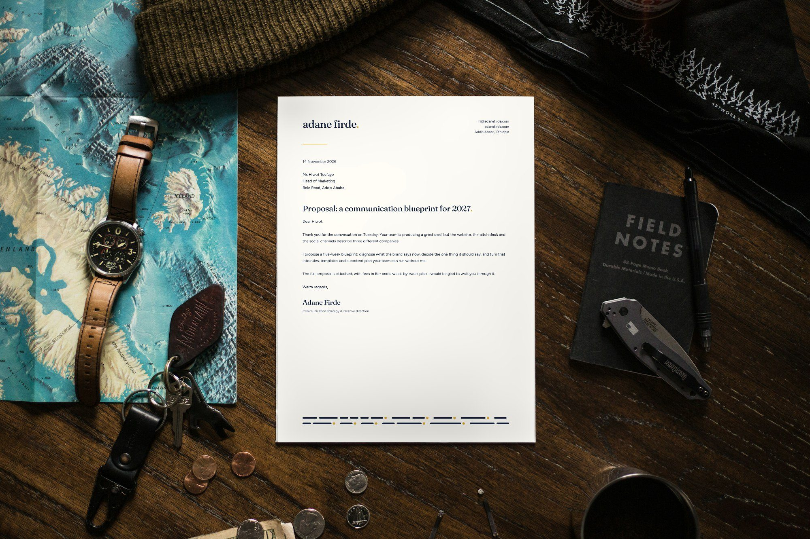
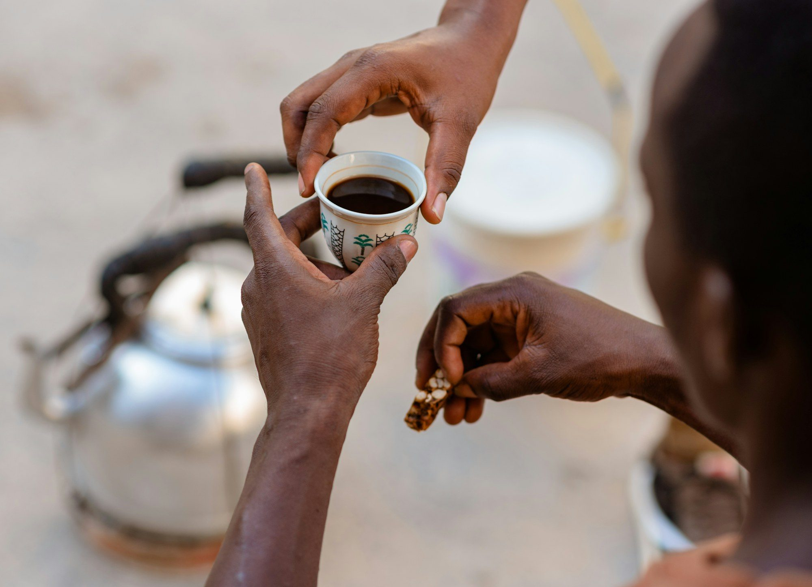

Plain words,clear decisions.
I’m Adane Firde, a communication strategist and creative director in Addis Ababa. I help organisations decide what to say, then build the system that keeps them saying it.
Where brands get stuck.
At Youthopians we make campaigns, films and content. Years of that work taught me that most brands don’t get stuck in production. They get stuck in the decision before it.
Teams make more content every year and say less with it. This practice is the strategy end of the work: one client at a time, the decision first and the creative second.
- Based in
- Addis Ababa, Ethiopia
- Co-founded
- Youthopians, a creative and consulting agency
- Clients
- Businesses, NGOs and institutions
Clear is kinder than clever.
If your customer can’t repeat it, it isn’t finished.
- Decide before you design.
Strategy comes first. The look follows the decision.
- Write it down.
A decision nobody wrote down gets made again in every meeting.
- Leave a system.
You should be able to run it without me.



Addis Ababa at dusk.Photograph: Unsplash
Who it is for, and who it isn’t.
A good fit
- Owner-led businesses that have grown faster than their message
- Brands about to hire an agency or launch something new
- NGOs and institutions with several audiences to serve
Not a fit
- Teams looking only for social posts or media buying
- Projects that need a full production crewFor that, try Youthopians.
- Work that must start before we agree the problem
